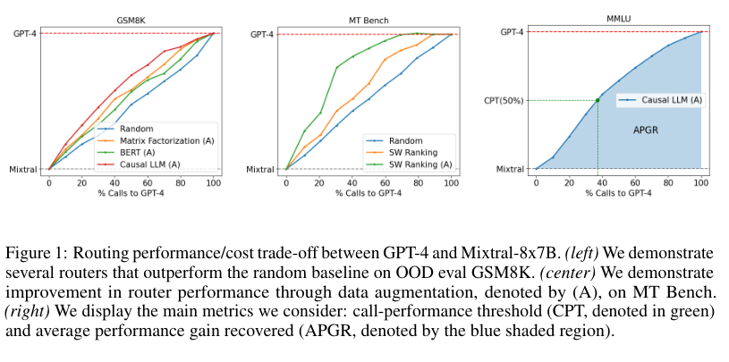
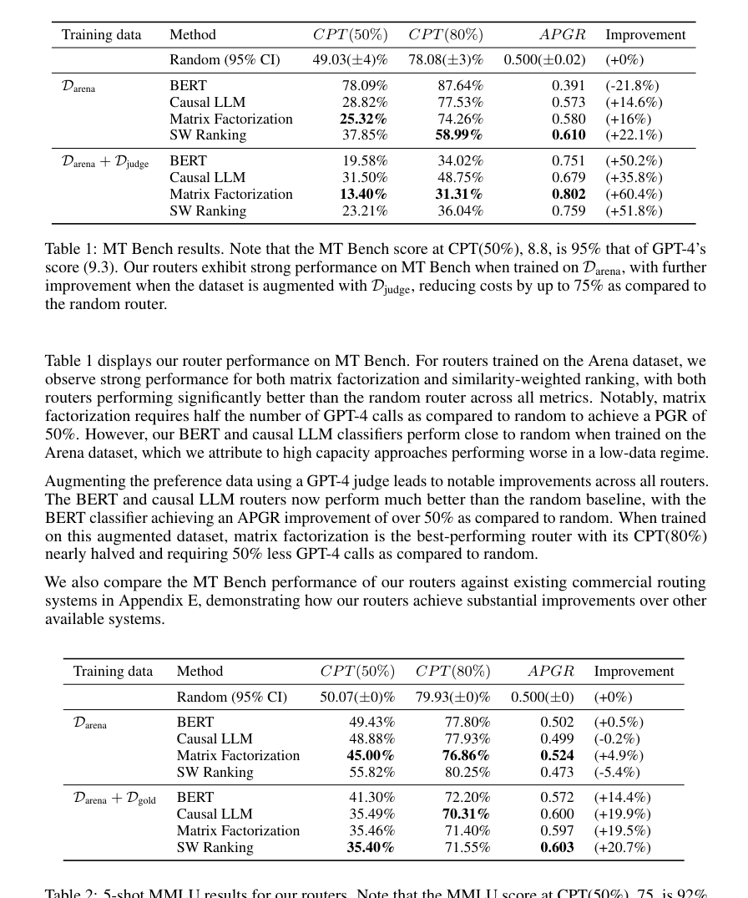
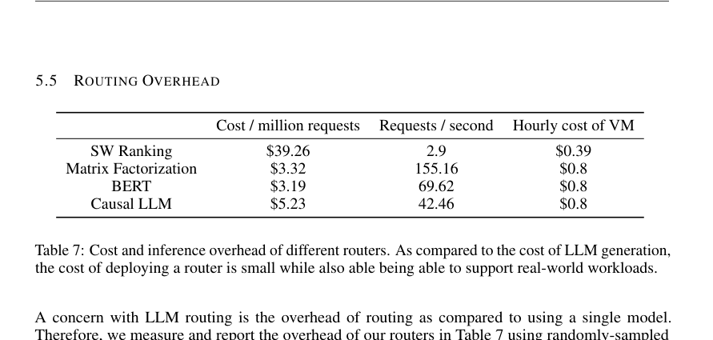

RouteLLM：用偏好数据学习 LLM 路由器中文翻译稿
摘要。RouteLLM 研究如何在推理时动态选择强模型和弱模型，以在质量和成本之间折中。强模型质量高但昂贵，弱模型便宜但能力有限。论文提出一个用偏好数据训练路由器的框架：给定用户 query，路由器判断弱模型是否足以回答；若足够，则调用弱模型节省成本，否则调用强模型保证质量。作者引入数据增强方法提高路由效果，并用 CPT（call-performance threshold）和 APGR（average performance gain recovered）评估成本-性能前沿。实验表明，RouteLLM 可在基本不牺牲回答质量的情况下将成本降低超过 2 倍，并且能泛化到训练中未出现的模型组合。
1 动机
LLM 部署中的核心矛盾是质量与成本。把所有请求都交给 GPT-4 这类强模型能保证较高质量，但成本很高；全部交给 Mixtral、Llama 等较弱或较小模型则便宜得多，但复杂问题容易失败。LLM routing 的目标是在每个请求级别判断“这个问题是否真的需要强模型”。
一个理想路由器需要满足三点：只调用一个模型，避免多模型投票带来的额外延迟和成本；能泛化到训练分布外的问题；能迁移到新的强/弱模型组合，而不必每换一组模型都重新收集大量标注。

2 偏好数据与训练框架
RouteLLM 把路由问题转化为偏好预测问题。对于同一个 query，若人类或 judge 偏好强模型回答，则路由器应倾向调用强模型；若弱模型回答足够好，则应调用弱模型。论文使用 preference data，并通过数据增强扩充训练信号，包括让 GPT-4 等 judge 比较不同模型回答。
作者尝试多种路由模型：matrix factorization、BERT classifier、causal LLM router 和 similarity-weighted ranking 等。它们的共同目标是估计 query 对强模型的“必要性”，再根据成本预算或目标质量阈值决定路由边界。
3 评估指标
论文强调只报告平均准确率不足以评价路由器，因为路由器本质上输出一条成本-性能曲线。CPT 表示在达到某个目标性能时需要调用强模型的比例，越低越省钱；APGR 衡量路由器恢复了强模型相对于弱模型的多少性能增益，越高说明少量强模型调用带来更多质量收益。
这两个指标比单点成本或单点准确率更适合比较路由系统，因为用户可以根据预算选择不同 operating point。
4 实验结果
实验覆盖 MT Bench、MMLU、GSM8K 等基准，并考察训练数据量、数据增强、跨模型组合迁移和 routing overhead。结果显示，基于偏好数据的路由器明显优于随机路由和简单启发式；数据增强能进一步改善 MT Bench 等任务上的曲线；部分路由器能迁移到训练中未见过的强/弱模型组合。


5 局限与启发
RouteLLM 主要解决单请求的强/弱模型选择，不直接考虑并发负载、队列拥塞、workflow 依赖、KV cache 复用或多阶段任务的端到端延迟。它依赖偏好数据和 judge 质量，若偏好标注偏向某些任务类型，路由器也会继承偏差。
对本仓库方向的意义。RouteLLM 是“模型选择/语义路由”的核心参考。它可以和 Chimera 形成上下游关系：RouteLLM 解决单 query 是否需要强模型，Chimera 进一步把模型选择放入多智能体 workflow 和系统负载中。后续选题可研究 preference-aware routing 与 cache-aware scheduling、SLO-aware load balancing 的联合优化。
参考说明
参考文献保留在原 PDF 中。本文覆盖摘要、路由动机、偏好数据训练、指标、实验结果和研究启发。